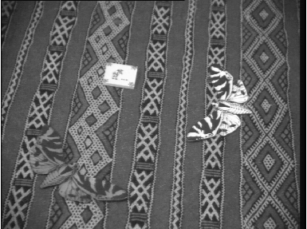
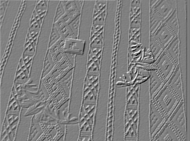
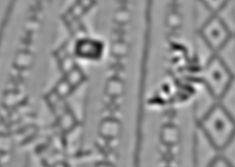
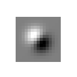
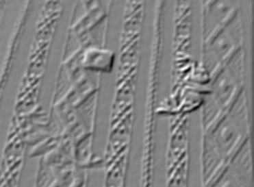

Convolutions in Matlab
David Young
This illustrates the convolution algorithm, as it might be written in many languages, and also gives some practical information about how convolutions can be carried out in Matlab.
Contents
Setup
Set up an array and a mask. This assumes that you have the Sussex vision library in your Matlab path.
The mask is 3x3, but the methods below will work whatever the size and shape of the mask.
im = teachimage('butterflies1.bmp'); imshow(im); m = [2 1 0; 1 0 -1; 0 -1 -2] % a diagonal edge detection mask
m =
2 1 0
1 0 -1
0 -1 -2
 General convolution algorithm
The standard way to do a convolution in most languages, using nested loops. This is very slow in Matlab, largely because of array bounds checking.
Note that the +nmr +nmc in the index calculation for im are there only because the output array starts at (1,1). They would be omitted in a language that supported general array bounds.
[nxr, nxc] = size(im); % nxr: number of im rows, etc. [nmr, nmc] = size(m); nyr = nxr - nmr + 1; % get valid output region nyc = nxc - nmc + 1; y1 = zeros(nyr, nyc); % preallocate output array tic for yr = 1:nyr % loop over output elements for yc = 1:nyc sum = 0; for mr = 1:nmr % loop over mask elements for mc = 1:nmc sum = sum + im(yr-mr+nmr, yc-mc+nmc) * m(mr, mc); end end y1(yr, yc) = sum; % store result end end toc imshow(y1, []); % show final result
Elapsed time is 9.627813 seconds.
Better code in Matlab
A better way of doing it in Matlab, but without using a library function. This does all the multiplications for each mask element together, adding them together a whole array at a time. It's much faster in this language, and gives the same results, as you can see from the final line of the calculation.
This is the kind of method you might employ with parallel processing hardware, if it is available. The key to understanding this is to realise that xpart is a shifted copy of the original input, which is multiplied by one mask element and added in to the output. You need to understand how the : operator in Matlab lets you get a subarray.
[nxr, nxc] = size(im); % nxr: number of im rows, etc. [nmr, nmc] = size(m); nyr = nxr - nmr + 1; % get valid output region nyc = nxc - nmc + 1; y2 = zeros(nyr, nyc); % preallocate output array tic for mr = 1:nmr % loop over mask elements for mc = 1:nmc xpart = im(nmr-mr+1:nxr-mr+1, nmc-mc+1:nxc-mc+1); y2 = y2 + xpart * m(mr, mc); end end toc % Compare final result max_difference = max(max(abs(y2-y1)))
Elapsed time is 0.048684 seconds.
max_difference =
0
Using Matlab's built-in function
This is the standard Matlab function. Again, it returns the same answer. It's faster still. Note that tic and toc probably aren't giving very accurate reports now, as the time elapsed is very small, and they measure clock time rather than CPU time.
tic y3 = conv2(im, m, 'valid'); % Mask is SECOND argument toc max_difference = max(max(abs(y3-y1)))
Elapsed time is 0.129462 seconds.
max_difference =
0
Using the Sussex convolution function.
For some masks, convolution can be speeded up further using a property known as "generalised separability". The local Sussex function convolve2 (also available from the MathWorks file exchange) exploits this to see if it can go faster still. The convolution result is still almost the same, though there is a very tiny numerical difference due to rounding errors in the computations.
The saving isn't evident on a small 3x3 mask (in fact there's a small overhead). To see what this function buys us, we will use a much larger mask, where the speedup becomes useful. First we time the built-in function, then the local one. For accuracy we now need to use cputime rather than tic and toc.
g = fspecial('log', 50, 5); % biggish Laplacian of Gaussian mask t = cputime; y4 = conv2(im, g, 'valid'); t = cputime - t; disp(['Time for Matlab''s conv2 function: ' num2str(t)]); t = cputime; y5 = convolve2(im, g, 'valid'); t = cputime - t; disp(['Time for Sussex convolve2 function: ' num2str(t)]); max_difference = max(max(abs(y5-y4))) imshow(y5, []); % see the output from either
Time for Matlab's conv2 function: 0.92188 Time for Sussex convolve2 function: 0.1875 max_difference = 5.8981e-017
Mask combination
Finally, this demonstrates the associative property of convolution: that is, you can make a mask that combines the effects of two masks, by convolving the original two together.
We first do smoothing followed by differencing with our original mask, then we combine the two masks and do a single convolution with the combined mask, and check that the results are the same. Again, there is a very tiny numerical error, but the results are effectively identical.
sm = fspecial('gauss', 13, 2); % A gaussian smoothing mask % First, do smoothing followed by the previous edge mask y1 = convolve2(im, sm, 'valid'); y2 = convolve2(y1, m, 'valid'); % second mask on output of first % Changing the order above (to m then sm) will have no effect on the final result % - try it yourself. % Now form a combined mask cm = convolve2(sm, m, 'full'); % Need 'full' to get complete mask % cm is a combined smoothing and diagonal edge mask. imshow(cm, [], 'InitialMagnification', 500); % Look at the combined mask y3 = convolve2(im, cm, 'valid'); % Combined mask on original image max_difference = max(max(abs(y3-y2))) figure; imshow(y3, []);
max_difference = 1.6098e-015 
Experimenting yourself
You can experiment with this demonstration yourself, by downloading this html document and using Matlab's grabcode function to extract the original M-file. You can then edit it to try different ideas.
This document may be accessible from outside Sussex University, but to use functions from the local library you need to be a student or member of staff of the University.
Copyright University of Sussex, 2006